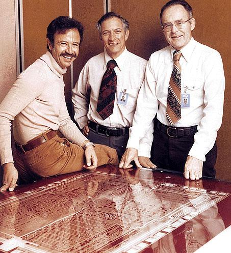
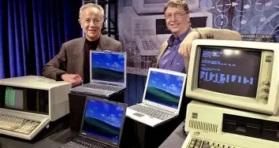
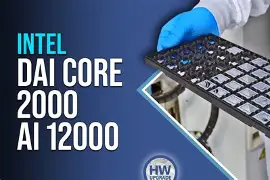
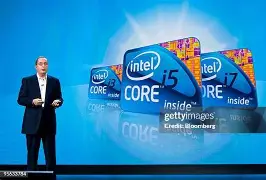
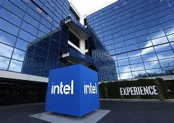

1968
1968
Intel Begins
Intel was founded and began its journey in semiconductor technology and innovation.
Intel
Explore Intel's journey through time and discover how innovation has shaped a more sustainable future.
Scroll to view the timeline | Flip cards to learn more

1968Intel was founded and began its journey in semiconductor technology and innovation.

1990sIntel increased its focus on reducing waste, conserving resources, and protecting the environment.

2000sIntel expanded its environmental programs and increased its use of renewable energy.

2010sIntel established long-term sustainability goals focused on renewable energy, water conservation, and waste reduction.

2020sIntel continues working toward responsible manufacturing, renewable energy, water conservation, and reducing its environmental impact.
Intel continues developing technology while working toward a more sustainable future.